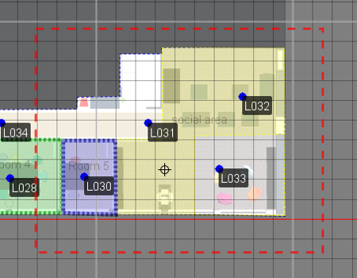
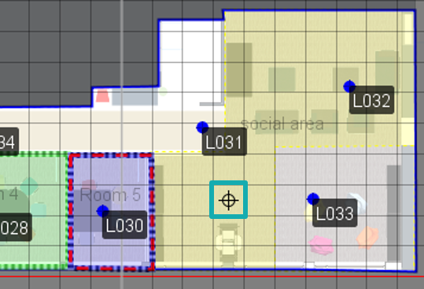

Useful Tips
This section contains some useful tips to work more efficiently with the QSP.
Rubber Band
To select multiple objects in the QSP map view, you can use the rubber band feature.
To use the rubber band feature, place the cursor on the edge of where you want to start the rubber band and hold down the left mouse button while you drag the cursor over the area that you want to select. A red dashed line will indicate the edges of the band. All objects within the band will be selected.

Add Crosshairs
To use some of the QSP features, you will need to add a crosshair to the map view.
To do this, move the cursor to point where you want to add the crosshair on the map view and right-click. A small black crosshair will appear in the map view.

To place the crosshair somewhere else, just move the cursor to the new location and right-click again.
Zoom In and Out in the Map View
You can use your mouse's scroll wheel or laptop touchpad to zoom in and out of the map view. A handy tip is to place the cursor where you want to zoom in to target the zoom.
You can also use the map controls at the bottom edge of the map view to zoom in and out.
Move Around in the Map View
To move around the map view of your project in the QSP, you can right-click on the map view and drag it in the desired direction. This way you can navigate to another area without zooming out first.
Rotate the Map View
If you need to rotate the QSP's map view, you can do so by using the map controls at the bottom at the bottom of the map view.
Show/Hide Gridlines
By default, the QSP will show grid lines in the map view to help you with lining up objects. If you want to hide them, you can do so by unchecking the box Show grid in the map controls at the bottom of the map view.
Change Snap to Grid Settings
By default, the QSP will snap edited polygon points to the closest 0.5m. This feature makes it easier to align objects. If you need to changed the default snap to distance, you can do so by editing the setting in the map controls at the bottom of the map view. If you want to deactivate the feature completely, you can do so by unchecking the snap to box.